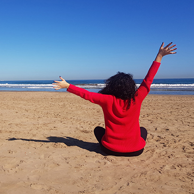
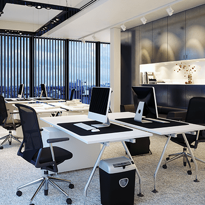

- about me -
Hi, i'm Miriam, it's nice to meet you. On this page i have decided to write some
random things about me, both from a professional and a personal point of view. I feel
that all aspects are important when deciding to bring a new person into your company,
or hire him/her for an independent project.

- work & studies -
Here you can find some details of the schools and universities i attended and their
specializations and also information about my current and former jobs. A few extra
words would be that i have had other smaller, summer type jobs which were not
neccessarily important enough to be mentioned here.
- work & studies -
This section contains links to my portfolio, in which i try to add more and more
projects. I have also mendtioned other courses and qualifications that i got to obtain
until now, IT related.
- hobbies -
I strongly believe it's really important for each person to have at least one hobby,
one passion they truly care about and for which they would always make an effort and
which would mentain them healthy and happy. I have many things that i love doing, but
here i mentioned the two biggest ones.